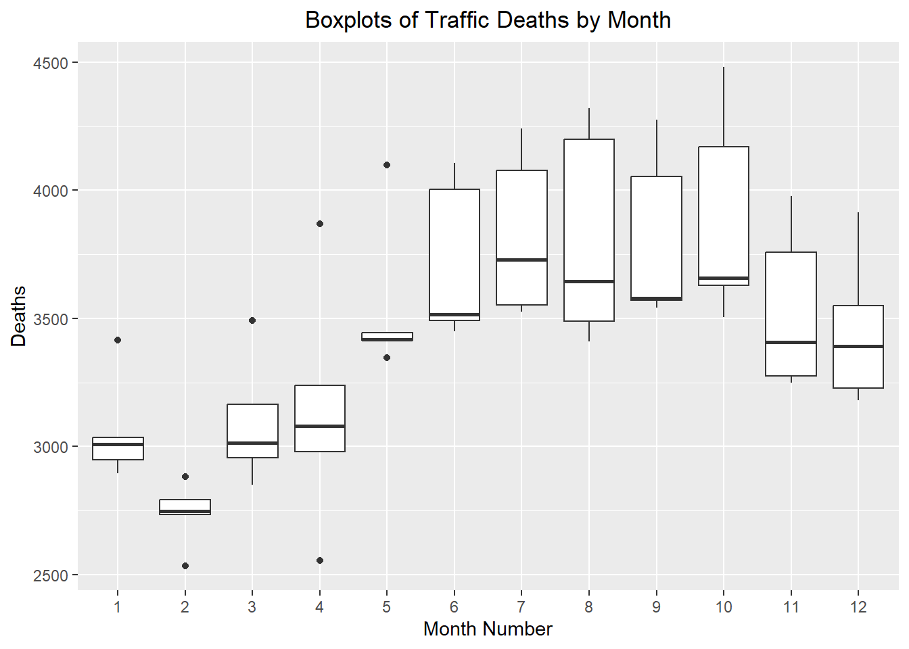

deaths_df <- rio::import("../data/traffic_deaths.xlsx")
# Method 1: Create date from scratch based on pattern of rows
# This only works if the data are in ascending order with no missing values
# Note: This file is not in the right order, so this code gives the wrong tsibble
# unless you sort the Excel file before proceeding.
start_date <- lubridate::ymd("2017-01-01")
date_seq <- seq(start_date,
start_date + months(nrow(deaths_df)-1),
by = "1 months")
deaths_tibble <- tibble(
dates = date_seq,
year = lubridate::year(date_seq),
month = lubridate::month(date_seq),
value = pull(deaths_df, Deaths)
)
# Method 2: Build using the date information in the Excel file
deaths_tibble <- deaths_df |>
mutate(
date_str = paste("1", Month, Year),
dates = dmy(date_str),
year = lubridate::year(dates),
month = lubridate::month(dates),
value = Deaths
) |>
dplyr::select(dates, year, month, value) |>
tibble()
# Create the index variable and convert to a tsibble
deaths_ts <- deaths_tibble |>
mutate(index = tsibble::yearmonth(dates)) |>
as_tsibble(index = index) |>
dplyr::select(index, dates, year, month, value) |>
rename(deaths = value) # rename value to emphasize data contextChapter 1: Lesson 4
Decomposition of Time Series
Learning Outcomes
Decompose time series into trends, seasonal variation, and residuals
- Obtain residuals as difference between original series and trend + seasonal estimatesUse R to describe key features of time series data
- Remove seasonal variation of a time seriesExplain the key theoretical concepts of time series decomposition
- Explain how to remove seasonal variation using an estimate for seasonal component of a time seriesPreparation
- Read Sections 1.5.4-1.5.5 and 1.6
Learning Journal Exchange (10 min)
- Review another student’s journal
- What would you add to your learning journal after reading your partner’s?
- What would you recommend your partner add to their learning journal?
- Sign the Learning Journal review sheet for your peer
Converting from a data file to a tsibble (5 min)
This is a demonstration of how to read in an Excel or csv data file and convert it to a tsibble.
This results in a tsibble. The first few rows are given here:
# A tsibble: 6 x 5 [1M]
index dates year month deaths
<mth> <date> <dbl> <dbl> <dbl>
1 2017 Jan 2017-01-01 2017 1 3034
2 2017 Feb 2017-02-01 2017 2 2748
3 2017 Mar 2017-03-01 2017 3 3164
4 2017 Apr 2017-04-01 2017 4 3238
5 2017 May 2017-05-01 2017 5 3416
6 2017 Jun 2017-06-01 2017 6 3492Data Visualizations (5 min)
The following time plot illustrates the data in this time series.
Time Series Plot: Default y-axis
autoplot(deaths_ts, .vars = deaths) +
labs(
x = "Month",
y = "Traffic Fatalities",
title = "Traffic Fatalities in the United States (by Month)"
) +
theme(plot.title = element_text(hjust = 0.5))
- What do you notice?
- Does it seem like there is a trend in the time series?
- Is there evidence of a seasonal effect? If so, when is the number of fatalities particularly high? particularly low?
Time Series Plot: Adjusted y-axis
The vertical axis was adjusted in this plot, so it would begin at 0.
autoplot(deaths_ts, .vars = deaths) +
labs(
x = "Month",
y = "Traffic Fatalities",
title = "Traffic Fatalities in the United States (by Month)"
) +
coord_cartesian(ylim = c(0,4500)) +
theme(plot.title = element_text(hjust = 0.5))
- Which of the two time plots above is superior? Why?
Visualization of Seasonal Effect
ggplot(deaths_ts, aes(x = factor(month), y = deaths)) +
geom_boxplot() +
labs(
x = "Month Number",
y = "Deaths",
title = "Boxplots of Traffic Deaths by Month"
) +
theme(plot.title = element_text(hjust = 0.5))
Computing the Seasonally Adjusted Series (20 min)
Our objective is to find an estimate for the time series that does not fluctuate with the seasons. This is called the seasonally adjusted series.
Centered Moving Average
First, we compute the centered moving average, \(\hat m_t\). This computation was explored in detail in the previous lesson. To emphasize the computation of the centered moving average, the observed data values that were used to find \(\hat m_t\) for December 2017 are shown in blue.
The centered moving average, \(\hat m_t\), is then used to compute the monthly additive effect, \(\hat s_t\):
\[ \hat s_t = x_t - \hat m_t \]
If we compute the mean of \(\hat s_t\) for all values for which it is defined, we get a value that is reasonably close to 0, but not exactly zero. We adjust this by subtracting the mean from \(\hat s_t\) to get the seasonally adjusted mean:
\[ \bar s_t = \hat s_t - \bar {\hat s_t} \]
Finally, we compute the seasonally adjusted series by subtracting \(\bar s_t\) from each of the observed values:
\[ \text{seasonally adjusted series} = x_t - \bar s_t \]
deaths_ts <- deaths_ts |>
mutate(
m_hat = (
(1/2) * lag(deaths, 6)
+ lag(deaths, 5)
+ lag(deaths, 4)
+ lag(deaths, 3)
+ lag(deaths, 2)
+ lag(deaths, 1)
+ deaths
+ lead(deaths, 1)
+ lead(deaths, 2)
+ lead(deaths, 3)
+ lead(deaths, 4)
+ lead(deaths, 5)
+ (1/2) * lead(deaths, 6)
) / 12
)| index | month | deaths | m_hat | s_hat |
|---|---|---|---|---|
| 2017 Jan | 1 | 3034 | NA | |
| 2017 Feb | 2 | 2748 | NA | |
| 2017 Mar | 3 | 3164 | NA | |
| 2017 Apr | 4 | 3238 | NA | |
| 2017 May | 5 | 3416 | NA | |
| 2017 Jun | 6 | 3492 | NA | |
| 2017 Jul | 7 | 3730 | 3351.6 | |
| 2017 Aug | 8 | 3409 | 3350 | |
| 2017 Sep | 9 | 3572 | 3343.2 | |
| 2017 Oct | 10 | 3629 | 3326.2 | |
| 2017 Nov | 11 | 3408 | 3316.5 | |
| 2017 Dec | 12 | 3391 | 3318.6 | |
| 2018 Jan | 1 | 3010 | 3312.1 | -302.1 |
| 2018 Feb | 2 | 2734 | 3308 | -574 |
| 2018 Mar | 3 | 3015 | 3311.7 | -296.7 |
| 2018 Apr | 4 | 2979 | 3313.2 | -334.2 |
| 2018 May | 5 | 3443 | 3307.8 | 135.2 |
| 2018 Jun | 6 | 3514 | 3292.4 | 221.6 |
| 2018 Jul | 7 | 3552 | 3281.1 | 270.9 |
| 2018 Aug | 8 | 3490 | 3270.2 | 219.8 |
| 2018 Sep | 9 | 3579 | 3259.5 | 319.5 |
| 2018 Oct | 10 | 3657 | 3261.2 | 395.8 |
| 2018 Nov | 11 | 3250 | 3264.2 | -14.2 |
| 2018 Dec | 12 | 3181 | 3260.5 | -79.5 |
| 2019 Jan | 1 | 2948 | 3256.7 | -308.7 |
| 2019 Feb | 2 | 2535 | 3262.1 | -727.1 |
| 2019 Mar | 3 | 2956 | 3267.1 | -311.1 |
| 2019 Apr | 4 | 3079 | 3259.3 | -180.3 |
| 2019 May | 5 | 3417 | 3254 | 163 |
| 2019 Jun | 6 | 3449 | 3257 | 192 |
| 2019 Jul | 7 | 3527 | 3256.7 | 270.3 |
| 2019 Aug | 8 | 3645 | 3269 | 376 |
| 2019 Sep | 9 | 3543 | 3279.1 | 263.9 |
| 2019 Oct | 10 | 3506 | 3252.8 | 253.2 |
| 2019 Nov | 11 | 3274 | 3228 | 46 |
| 2019 Dec | 12 | 3228 | 3248.2 | -20.2 |
| 2020 Jan | 1 | 2895 | 3294.3 | -399.3 |
| 2020 Feb | 2 | 2883 | 3340.3 | -457.3 |
| 2020 Mar | 3 | 2850 | 3384.7 | -534.7 |
| 2020 Apr | 4 | 2555 | 3433.5 | -878.5 |
| 2020 May | 5 | 3346 | 3481.3 | -135.3 |
| 2020 Jun | 6 | 4004 | 3514.8 | 489.2 |
| 2020 Jul | 7 | 4078 | 3549.9 | 528.1 |
| 2020 Aug | 8 | 4199 | 3567.7 | 631.3 |
| 2020 Sep | 9 | 4053 | 3590.7 | 462.3 |
| 2020 Oct | 10 | 4169 | 3672.1 | 496.9 |
| 2020 Nov | 11 | 3757 | 3758.2 | -1.2 |
| 2020 Dec | 12 | 3550 | 3793.8 | -243.8 |
| 2021 Jan | 1 | 3414 | 3804.8 | -390.8 |
| 2021 Feb | 2 | 2792 | 3816.6 | -1024.6 |
| 2021 Mar | 3 | 3492 | 3831 | -339 |
| 2021 Apr | 4 | 3868 | 3853.3 | 14.7 |
| 2021 May | 5 | 4098 | 3875.5 | 222.5 |
| 2021 Jun | 6 | 4107 | 3899.8 | 207.2 |
| 2021 Jul | 7 | 4240 | NA | NA |
| 2021 Aug | 8 | 4320 | NA | NA |
| 2021 Sep | 9 | 4276 | NA | NA |
| 2021 Oct | 10 | 4482 | NA | NA |
| 2021 Nov | 11 | 3977 | NA | NA |
| 2021 Dec | 12 | 3914 | NA | NA |
- Working with your assigned partner, fill in the missing values of \(\hat s_t\) in the table above.
Seasonally Adjusted Mean
Next, we need to compute the seasonally adjusted mean. This is the mean (across years) of \(\hat s_t\) for each month. To compute this, it can be convenient to organize the values of \(\hat s_t\) in a table, where the columns give the year and the rows give the month.
# Compute s_hat
deaths_shat_df <- deaths_ts |>
data.frame() |>
mutate(month = month(dates, label=TRUE)) |>
round_df(1) |> # Round df to make the computations simpler
mutate(s_hat = deaths - m_hat)
wider_df <- deaths_shat_df |>
dplyr::select(year, month, s_hat) |>
# group_by(month) |>
# mutate(s_hat_bar = mean(s_hat, na.rm = TRUE)) |>
pivot_wider(values_from = "s_hat", names_from = "month")
wider_df2 <- wider_df %>%
bind_rows(colMeans(wider_df[ , -c(1)], na.rm = TRUE)) |>
round_df(1) |>
mutate(
Jan = round_as_text(Jan),
Feb = round_as_text(Feb),
Mar = round_as_text(Mar),
Apr = round_as_text(Apr),
May = round_as_text(May),
Jun = round_as_text(Jun),
Jul = round_as_text(Jul),
Aug = round_as_text(Aug),
Sep = round_as_text(Sep),
Oct = round_as_text(Oct),
Nov = round_as_text(Nov),
Dec = round_as_text(Dec)
) |>
mutate(year = ifelse(row_number() == n(), "Mean", year))
wider_df2 |>
# Hide bar_s_t values for November and December
mutate(Jul = ifelse(row_number() == 1, "______", Jul)) |>
mutate(Aug = ifelse(row_number() == 1, "______", Aug)) |>
mutate(Sep = ifelse(row_number() == 1, "______", Sep)) |>
mutate(Oct = ifelse(row_number() == 1, "______", Oct)) |>
mutate(Nov = ifelse(row_number() == 1, "______", Nov)) |>
mutate(Dec = ifelse(row_number() == 1, "______", Dec)) |>
mutate(Nov = ifelse(row_number() == n(), "______", Nov)) |>
mutate(Dec = ifelse(row_number() == n(), "______", Dec)) |>
rename(Year = year) |>
color_last_row2("#0072B2") |>
rbind(c("Adjusted",rep("______",12))) |>
color_last_row2("#0072B2") |>
display_table()| Year | Jan | Feb | Mar | Apr | May | Jun | Jul | Aug | Sep | Oct | Nov | Dec |
|---|---|---|---|---|---|---|---|---|---|---|---|---|
| 2017 | NA | NA | NA | NA | NA | NA | ______ | ______ | ______ | ______ | ______ | ______ |
| 2018 | -302.1 | -574 | -296.7 | -334.2 | 135.2 | 221.6 | 270.9 | 219.8 | 319.5 | 395.8 | -14.2 | -79.5 |
| 2019 | -308.7 | -727.1 | -311.1 | -180.3 | 163 | 192 | 270.3 | 376 | 263.9 | 253.2 | 46 | -20.2 |
| 2020 | -399.3 | -457.3 | -534.7 | -878.5 | -135.3 | 489.2 | 528.1 | 631.3 | 462.3 | 496.9 | -1.2 | -243.8 |
| 2021 | -390.8 | -1024.6 | -339 | 14.7 | 222.5 | 207.2 | NA | NA | NA | NA | NA | NA |
| Mean | -350.2 | -695.8 | -370.4 | -344.6 | 96.3 | 277.5 | 361.9 | 321.5 | 318.6 | 362.2 | ______ | ______ |
| Adjusted | ______ | ______ | ______ | ______ | ______ | ______ | ______ | ______ | ______ | ______ | ______ | ______ |
- The table above gives the values of \(\hat s_t\). Fill in the missing values in the first row of table above. Note you already computed these.
- The second-to-last row (labeled “Mean”) gives the values of \(\bar s_t\). Fill in the two missing numbers
- Compute the mean of the \(\bar s_t\) values. (This number should be relatively close to 0.)
- Subtract the mean of the \(\bar s_t\) values from each \(\bar s_t\) to get \(\bar s_t\), the seasonally adjusted mean for month \(t\).
NEED TO BUILD adjusted_ts!!!!!!!!!!!!!!!!!!!!!!!!!!!!!!!!!!!!!!! NEEDS seasonally_adjusted
Visualizing the Seasonally Adjusted Series
The figure below illustrates the original time series (in black), the centered moving average \(\hat m_t\) (in blue), and the seasonally adjusted series (in red).
autoplot(adjusted_ts, .vars = deaths) +
geom_line(aes(x = index, y = seasonally_adjusted), color = "#D55E00") +
geom_line(aes(x = index, y = m_hat), color = "#0072B2") +
labs(
x = "Month",
y = "Traffic Fatalities",
title = "Traffic Fatalities in the United States (by Month)"
) +
coord_cartesian(ylim = c(0,4500)) +
theme(plot.title = element_text(hjust = 0.5))
- In February 2020, there is a spike in the seasonally adjusted time series. Refer to the values in the original time series to explain why this occurred.
- In April 2020, there is a dip in the seasonally adjusted time series. Refer to the values in the original time series to explain why this occurred.
Visualize moving average, m-hat (computed for you)
Compute s-hat for a few values
Adjust \(\bar s_t\) to have mean 0
The mean of the the \(\bar s_t\) values is NA. We will subtract this from each of the \(\hat s_t\) values to get the adjusted monthly additive effect.
Use s-hat-bar to….
Seasonally adjusted data
Remove seasonal effect
Decomposition of a Time Series in Excel (40 min)
Caution
Provide 36 months worth of data
Students will compute a mean by hand
Students will compute (some values of) the additive decomposition by hand (Partial table given)
- Students will compute some values of the centered moving average by hand
- Students will compute some values of the monthly additive effect by hand
- Students will compute some values of the seasonally adjusted series by hand
- Students will plot some values of the decomposed time series by hand (Plot given)
Recap (5 min)
- Review objectives and key concepts
- Clarify questions on course or time series data